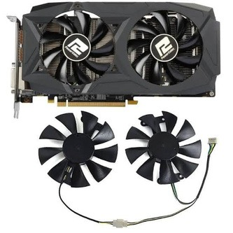

Informasi lainnya
← Kembali ke Produk KamiKipas USB dari VGA Bekas
Ulasan Produk
Kipas meja portabel dari kipas pendingin VGA atau kartu grafis komputer bekas. Memanfaatkan komponen yang masih berfungsi dan sumber daya yang sesuai untuk membantu menghasilkan alat pendingin sederhana.

E-WASTE FUNGSIONAL
Hasil karya dari barang bekas
Bagian dari projek kolaborasi Trash To Treasure, mengolah bahan bekas menjadi produk yang bermanfaat dan bernilai jual.
Alat dan Bahan
Bahan
- Kipas VGA bekas dan heatsink
- Kabel USB bekas
- Dudukan dari kayu, triplek, atau bahan bekas
- Sakelar, isolasi listrik, baut kecil, dan cable tie
- Kabel tambahan
Alat
- Obeng kecil
- Tang potong dan gunting
- Solder (jika tersedia)
- Multimeter (opsional)
Langkah Kerja
- Bongkar VGA dan ambil kipas beserta heatsinknya.
- Periksa jalur dan spesifikasi tegangan kipas sebelum membuat sambungan listrik.
- Siapkan sumber daya dan konektor USB yang sesuai; sambungan listrik perlu dipasang dan diisolasi dengan benar.
- Uji kipas dengan catu daya yang sesuai.
- Pasang kipas pada dudukan yang stabil.
- Rapikan kabel, bersihkan debu, dan periksa keamanan saat digunakan.
- Jika diperlukan, kembangkan varian dengan dua kipas.
Estimasi Biaya Produksi
Perkiraan biaya untuk satu produk berdasarkan makalah projek.
| Komponen biaya | Estimasi |
|---|---|
| Kipas VGA bekas | Rp0 |
| Kabel USB | Rp5.000 |
| Sakelar | Rp3.000 |
| Dudukan kipas | Rp5.000 |
| Kabel tambahan | Rp2.000 |
| Total biaya produksi | Rp15.000 |
Harga Jual dan Laba
Biaya produksiRp15.000
Harga jualRp30.000
Perkiraan labaRp15.000
Laba = Harga jual − Biaya produksi = Rp30.000 − Rp15.000 = Rp15.000
Sumber: Makalah Projek Kolaborasi “Trash To Treasure”, halaman 10–11. Harga merupakan estimasi dalam makalah, bukan penawaran penjualan langsung.